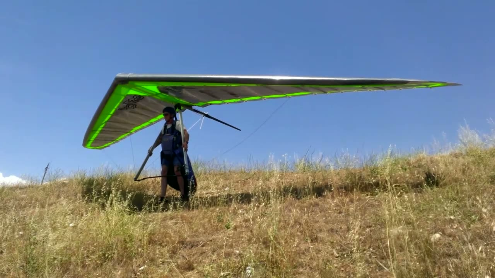
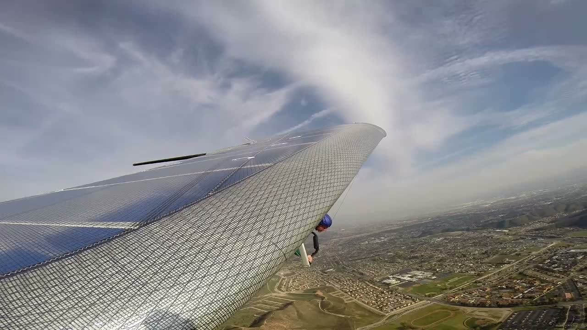
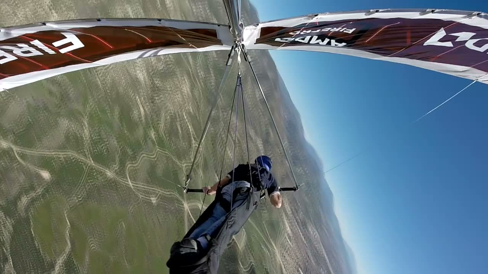

About Mike Meier
In brief
Mike Meier was a developmental, experimental and production test pilot of hang gliders for 45 years, flying the gliders Wills Wing designs and builds. He joined the Society of Experimental Test Pilots in 1994 and was made a Fellow in 2026.
Draft, Steve's, from the Gulfstream talk and Mike's emails. SETP Fellows induction photos to come.
Test flying #
In 45 years Mike flew experimental, developmental and production tests on Wills Wing's hang gliders: flow separation studies, maximum roll rate tests, spin testing, and the final quality-control flight on gliders coming off the line.





Photos: Mike's own, from his flight-test video and slides for the 2015 talk; licensed CC BY-SA 4.0 like his text (License).
SETP #
Below: from the 2018 Gulfstream talk, not in the paper; the years of membership and fellowship from Mike's email of October 23, 2026.
Mike first got involved with SETP in 1992, co-presenting a paper with Mark Stucky at the national symposium on applying classical flight test techniques to a modern high-performance hang glider. He applied for membership afterwards, on the strength of his experimental test work in hang gliders, and SETP accepted him as a member in 1994. He was made an Associate Fellow in 2018 and a Fellow in 2026.
By accepting my membership, the Society had, in effect, called my bluff. … And I had nothing. … Luckily, within about a year of coming to this realization, I had the good fortune to nearly kill myself while landing a hang glider.
To come: SETP Fellows induction photos. SETP has given its permission.
Awards #
| Date | Award |
|---|---|
| 2026 | Made a Fellow of the Society of Experimental Test Pilots. |
| February 2018 | Elected an Associate Fellow of the Society of Experimental Test Pilots. |
| March 2016 | The Rob Kells Memorial Award, given by the United States Hang Gliding and Paragliding Association for lifetime service to the hang gliding community. |
| July 2015 | Award of Appreciation from the Royal Australian Air Force 42 Wing for support of Squadron Safety Day. |
| May 2015 | Elected to the Rogallo Foundation Hall of Fame for career contributions to the development and promotion of the sport of hang gliding. |
| March 2015 | The Jack Northrop Award for the Most Outstanding Technical Paper presented at the 45th Annual West Coast Symposium of the Society of Experimental Test Pilots, for Lessons Learned and Murphy's Corollary. |
| April 2013 | Letter of Appreciation from Scaled Composites for Technical Assistance in helping the team to reach the milestone of the first powered flight in Spaceship 2. |
| March 2008 | National Aeronautic Association Safety Award, for making a significant contribution to the safety of the sport of hang gliding and paragliding. |
| October 2004 | ASTM Award of Appreciation, for work on development of technical standards for Light Sport Aircraft. |
| March 2003 | United States Hang Gliding Association Exceptional Service Award, for work on behalf of USHGA in the development of FAA regulations. |
| March 1994 | Elected to membership in the Society of Experimental Test Pilots. |
| February 1992 | Appointed FAA Accident Prevention Counselor, Riverside FSDO. |
| November 1990 | National Aeronautic Association Certificate of Honor, for making a significant contribution to the safety of the sport of hang gliding. |
| February 1986 | United States Hang Gliding Association Presidential Citation, for Outstanding Leadership of the Hang Glider Manufacturers Association and the USHGA Rating and Competition Programs. |
| 1982 | Hang Glider Manufacturers Association Exceptional Merit Award, for leadership of the HGMA. |
From the awards list on the original meiersafe.com, which Mike confirmed complete and correct on October 25, 2026; the 2026 Fellowship from his email of October 23, 2026.
Where the paper has been presented #
He presented the paper fifteen times from 2015 to 2018, to test pilots, hang-glider pilots and aerospace companies, and discussed it on the Flight Test Safety Committee podcast in 2024. Next: the National Test Pilot School, Mojave, December 11, 2026. The full list, the talk on video and what audiences said: Speaking.
Contact #
For briefing requests and corrections, email Mike at mikemeier@meiersafe.com.
Edited and built by Steve Pearson with Mike, from Mike's paper, talks and notes.
Text and Mike's photos CC BY-SA 4.0; the SETP video is SETP's, shown with permission.